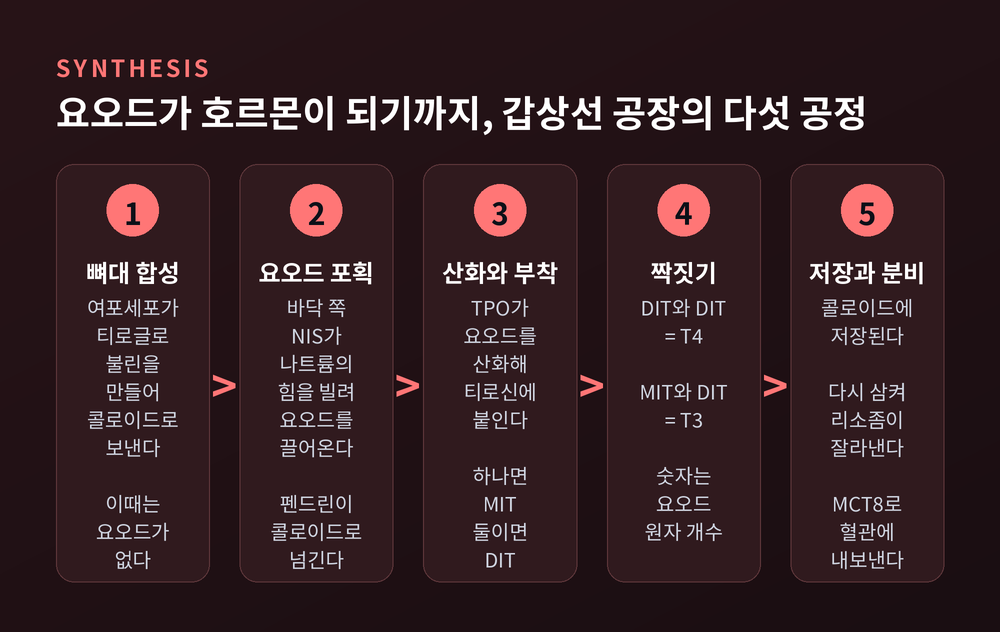
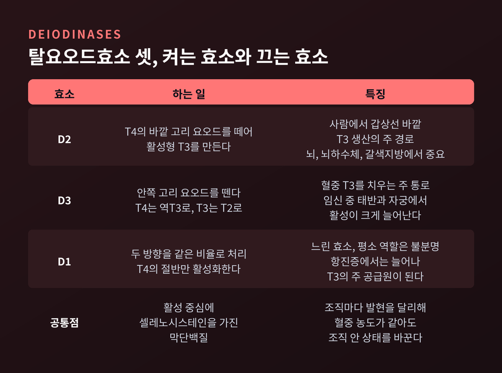
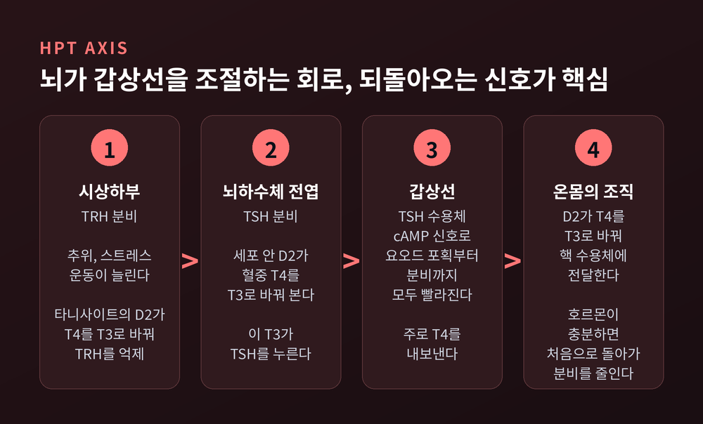
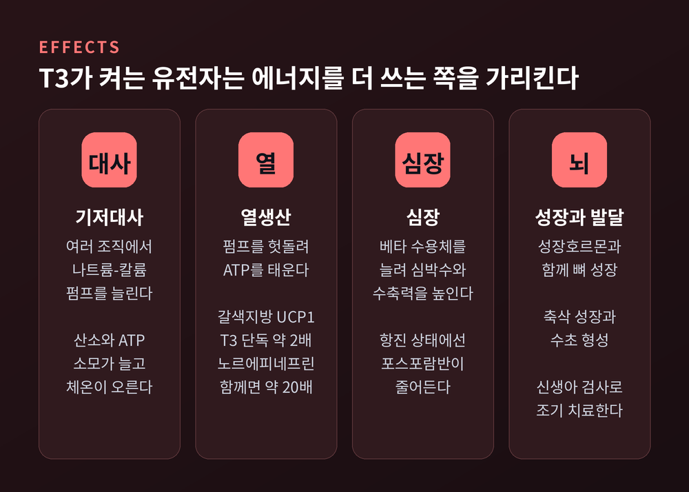
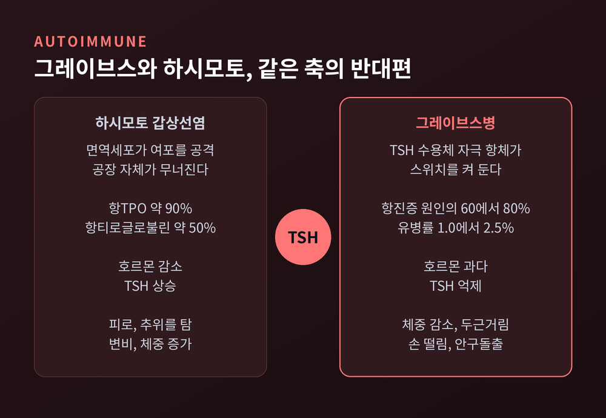
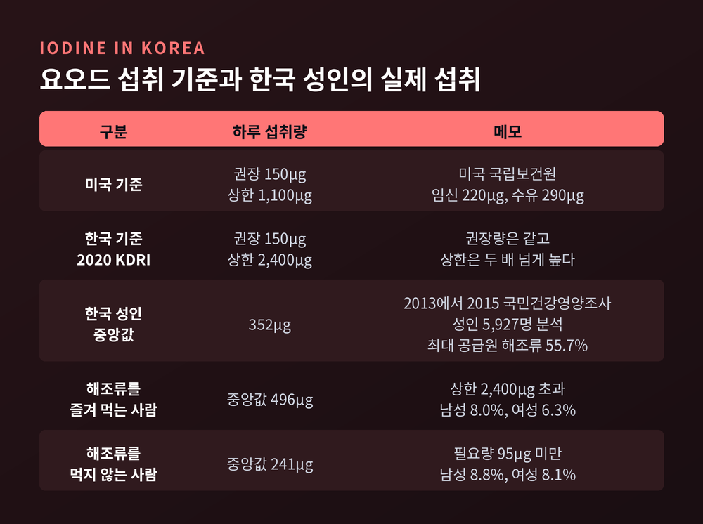

갑상선 호르몬 원리 — T4가 T3로 바뀌어 대사 속도를 정하는 과정
이번 글에서는 갑상선 호르몬이 몸의 대사 속도를 조절하는 원리를 정리해 보겠습니다.
요오드가 호르몬이 되는 과정부터 TSH 수치가 움직이는 이유까지 차례로 따라갑니다.
의학적 진단이나 치료 조언이 아니라 원리 설명이라는 점을 먼저 밝혀 둡니다.
먼저 세 줄로 요약합니다.
- 갑상선은 주로 T4를 만들고, 실제로 일하는 T3는 대부분 온몸의 조직에서 만들어집니다.
- 뇌는 혈중 호르몬을 직접 재지 않습니다. 뇌하수체 세포 안에서 T4를 T3로 바꿔 본 결과로 TSH를 조절합니다.
- 그레이브스병은 스위치가 켜진 채 고정된 상태이고, 하시모토 갑상선염은 공장이 무너지는 상태입니다. TSH는 두 경우에 반대로 움직입니다.

요오드를 붙잡아 단백질에 새기는 공장
갑상선은 목 앞쪽에 있는 나비 모양의 기관입니다.
안에는 작은 주머니 같은 여포가 빼곡합니다. 여포 안쪽은 콜로이드라는 끈적한 물질로 차 있습니다.
호르몬 생산은 뼈대 단백질을 만드는 데서 시작합니다.
여포세포가 티로글로불린이라는 큰 단백질을 만들어 콜로이드로 내보냅니다. 이 단계의 티로글로불린에는 요오드가 한 개도 없습니다.
다음은 원료 확보입니다.
세포 바닥 쪽 막에 있는 나트륨-요오드 공동수송체(NIS)가 혈액의 요오드를 끌어들입니다. 나트륨이 세포 안으로 들어가려는 힘을 빌려 요오드를 함께 태우는 방식입니다.
끌어들인 요오드는 세포 꼭대기의 펜드린이라는 통로를 거쳐 콜로이드로 나갑니다.
여기서 핵심 효소 TPO(갑상선 과산화효소)가 세 가지 일을 합니다.
- 과산화수소를 써서 요오드를 반응하기 쉬운 형태로 산화합니다.
- 티로글로불린의 티로신 자리에 요오드를 붙입니다. 하나 붙으면 MIT, 둘 붙으면 DIT입니다.
- 이웃한 둘을 짝짓습니다. DIT와 DIT가 만나면 T4, MIT와 DIT가 만나면 T3가 됩니다.
T4의 4, T3의 3은 붙어 있는 요오드 원자의 개수입니다.
이름에 원료가 그대로 새겨진 셈입니다.
완성된 호르몬은 바로 나가지 않습니다. 티로글로불린에 붙은 채 콜로이드에 쌓여 있습니다.
여포 안 티로글로불린 농도는 리터당 200~300g에 이릅니다. 정상인에서 이 비축분은 하루 1% 정도씩만 교체됩니다.
요오드가 귀한 환경에 대비한 저장고로 해석하는 연구자도 있습니다.
분비할 때는 세포가 콜로이드를 다시 삼킵니다. 리소좀이 티로글로불린을 잘라 T4와 T3를 풀어 주고, MCT8이라는 수송체가 이를 혈관으로 내보냅니다.
짝을 못 찾은 MIT와 DIT의 요오드는 떼어내 다시 씁니다.

갑상선은 T4를 만들고, 몸이 T3로 바꾼다
갑상선이 직접 내보내는 호르몬은 대부분 T4입니다.
정상 갑상선은 하루에 T4 약 85µg, T3 약 6.5µg을 내보낸다고 보고됩니다. 대략 13 대 1입니다.
그런데 핵 수용체가 훨씬 강하게 붙잡는 쪽은 T3입니다.
T4도 수용체에 붙을 수는 있지만 친화도가 낮아 상대적으로 비활성입니다. 그래서 T4를 전구 호르몬, T3를 활성 호르몬이라 부릅니다.
하루에 쓰이는 T3 가운데 갑상선에서 바로 나온 것은 20% 정도입니다.
나머지 약 80%는 간, 근육, 뇌 같은 조직이 T4에서 요오드 하나를 떼어 스스로 만듭니다.
이 일을 하는 효소가 탈요오드효소입니다. 세 종류가 있고 셀레늄을 활성 중심에 품고 있습니다.
- D2는 T4의 바깥 고리에서 요오드를 떼어 T3를 만듭니다. 사람에서 갑상선 바깥 T3 생산의 주된 경로로 봅니다. 뇌, 뇌하수체, 갈색지방에서 특히 중요합니다.
- D3는 안쪽 고리에서 요오드를 뗍니다. T4는 효과 없는 역T3(rT3)가 되고, T3는 T2로 꺼집니다. 혈중 T3를 치우는 주된 통로입니다.
- D1은 두 방향을 같은 비율로 처리하는 느린 효소입니다. 평소 역할은 아직 분명하지 않습니다. 다만 항진증에서는 D1이 늘어나 T3의 주 공급원이 됩니다.
이 구조가 주는 이점은 국소 조절입니다.
혈중 농도가 같아도 조직마다 D2와 D3를 다르게 켜서 '그 조직 안의 갑상선 상태'를 바꿀 수 있습니다.
추위가 좋은 예입니다.
찬 공기에 노출되면 교감신경이 갈색지방의 D2를 늘립니다. 세포 안 T3가 올라가고 열을 내는 유전자가 켜집니다. 이때 혈중 T3는 변하지 않습니다.
D2가 없는 생쥐는 추위 속에서 몸을 떠는 것으로만 버틴다는 관찰도 있습니다.
임신 중에는 태반과 자궁의 D3 활성이 크게 늘어납니다. 갑상선저하증이 있는 임신부의 호르몬 요구량이 느는 원인으로 거론됩니다.

혈액 속에서는 대부분 묶여서 다닌다
갑상선 호르몬은 기름에 잘 녹는 분자입니다. 그래서 혈액에서는 운반 단백질에 실려 다닙니다.
순환하는 T4의 약 75%는 TBG(티록신 결합 글로불린)에, 15%는 트랜스티레틴에, 10%는 알부민에 붙어 있다는 자료가 많습니다.
묶이지 않은 유리 T4는 0.03% 안팎, 유리 T3는 0.3% 안팎입니다.
다만 교과서에 따라 TBG 비율을 3분의 2로, 유리 T4를 0.2%로 적기도 합니다. 숫자는 조금씩 다르지만 "거의 전부가 묶여 있다"는 결론은 같습니다.
세포 안으로 들어가 작용하는 것은 유리형입니다.
묶인 쪽은 저장고이자 완충 장치입니다.
흥미로운 점이 있습니다. 혈중 총량으로는 T4가 T3보다 100배쯤 많습니다.
그런데 T4가 더 단단히 묶여 있어서 유리형끼리 비교하면 농도가 비슷합니다.
수명도 다릅니다. 혈중 T4의 반감기는 약 1주일입니다. T3는 짧아서 하루 안팎으로 보고됩니다.
오래 머무는 T4가 재고, 빨리 쓰고 사라지는 T3가 현금에 가깝습니다.
검사 해석에도 이 구조가 드러납니다.
임신하면 에스트로겐 영향으로 TBG가 늘어 총 T4가 올라갑니다. 하지만 TSH와 유리 T4는 정상일 수 있습니다. 그래서 총량보다 유리형을 봅니다.
T3는 유전자 스위치를 누른다
세포 안으로 들어온 T3는 핵으로 갑니다.
갑상선 호르몬 수용체는 호르몬이 오기 전부터 DNA의 특정 자리에 붙어 기다리고 있습니다.
수용체는 THRA와 THRB 두 유전자에서 만들어집니다. 흔한 형태는 TRα1과 TRβ1이고, 조직마다 분포가 다릅니다.
대개 RXR이라는 다른 수용체와 짝을 이뤄 갑상선호르몬 반응요소라는 DNA 서열에 앉습니다.
호르몬이 없을 때 이 수용체는 보조억제인자와 손을 잡고 유전자를 눌러 둡니다.
T3가 결합하면 모양이 바뀝니다. 억제인자가 떨어지고 보조활성인자가 들어와 전사가 시작됩니다.
이 방식은 신경 신호처럼 즉각적이지 않습니다.
유전자가 켜지고 단백질이 쌓여야 효과가 나타납니다. 갑상선 호르몬의 변화가 몸에 드러나는 데 시간이 걸리는 까닭입니다.
TRH에서 TSH로, 그리고 되돌아오는 신호
생산량은 뇌가 조절합니다. 시상하부, 뇌하수체, 갑상선을 잇는 이 회로를 HPT 축이라 부릅니다.
시상하부가 TRH를 내보냅니다.
TRH를 받은 뇌하수체 전엽이 TSH를 분비합니다.
TSH가 갑상선 세포의 수용체에 붙으면 cAMP 신호가 켜집니다. 요오드 포획, TPO 작동, 분비까지 합성의 거의 모든 단계가 빨라집니다.
호르몬이 충분해지면 TRH와 TSH 분비가 줄어듭니다. 이것이 음성 되먹임입니다.
여기에 한 겹이 더 있습니다.
TSH를 억제하는 것은 결국 뇌하수체 세포 안의 T3입니다. 이 T3는 혈중 T3에서도 오지만, 혈중 T4를 세포 안의 D2가 바꾼 것에서도 옵니다.
시상하부에서도 타니사이트라는 세포가 D2로 T4를 T3로 바꿔 TRH 뉴런에 전달합니다.
그래서 뇌는 T4의 변화를 먼저 알아챕니다.
요오드가 부족하거나 저하증이 막 시작될 때는 혈중 T4가 T3보다 먼저 떨어집니다. 그 신호로 TSH가 일찍 올라갑니다.
예전에는 TSH와 유리 T4가 단순한 로그 관계라고 설명했습니다. 유리 T4가 두 배 변하면 TSH는 백 배쯤 움직인다는 식입니다.
지금은 정상 범위 안에서는 그 관계가 곧게 이어지지 않으며, 나이나 흡연, 항체 여부에 따라 달라진다는 연구가 나와 있습니다.
그래도 TSH가 작은 변화를 크게 보여주는 민감한 지표라는 점은 여전합니다. 선별검사에서 TSH를 먼저 보는 이유입니다.
추위, 스트레스, 운동은 TRH 분비를 늘립니다. 반대로 소마토스타틴, 글루코코르티코이드, 도파민은 TSH를 억누릅니다.

대사 속도, 열, 심장, 그리고 뇌 발달
T3가 켜는 유전자들은 결국 한 방향을 가리킵니다. 에너지를 더 쓰는 쪽입니다.
기저대사율부터 보겠습니다.
T3는 여러 조직에서 나트륨-칼륨 펌프(Na⁺/K⁺-ATPase)를 늘립니다. 펌프가 돌수록 ATP와 산소가 소모되고 체온이 오릅니다.
열생산은 일부러 효율을 떨어뜨리는 방식으로 일어납니다.
ATP를 더 만들면서 동시에 펌프를 헛돌려 ATP를 태웁니다. 근육의 칼슘 펌프(SERCA)도 같은 헛바퀴에 동원됩니다.
미토콘드리아에서 양성자가 새어 나가게 해 에너지 일부를 열로 흘려보내기도 합니다.
갈색지방의 UCP1은 T3와 노르에피네프린이 각각 약 2배씩 늘리는데, 둘이 함께하면 약 20배로 뜁니다.
심장에서는 가속 페달 역할을 합니다.
β아드레날린 수용체를 늘려 심박수와 수축력, 심박출량을 높입니다.
항진 상태에서는 칼슘 펌프를 붙잡아 두던 포스포람반이 줄어 수축이 더 강하고 빨라집니다.
성장과 발달에서는 대체하기 어렵습니다.
어린이에게서 성장호르몬과 함께 뼈 성장을 이끌고, 뇌의 축삭 성장과 수초 형성에 관여합니다.
선천성 갑상선저하증은 가장 흔한 선천 내분비 질환으로, 뇌에 남는 영향은 되돌리기 어렵습니다.
1970년대 신생아 혈액 선별검사가 도입된 뒤 조기 치료가 가능해졌습니다. 1978년 북미 보고에서는 신생아 약 3,700명 중 1명꼴이었고, 기준치를 낮춘 최근에는 2,000명 중 1명 안팎까지 보고됩니다.

그레이브스와 하시모토, 같은 축의 반대편
두 질환 모두 자가면역 질환입니다. 하지만 축의 어디가 어긋나느냐가 다릅니다.
그레이브스병은 항진증의 가장 흔한 원인으로, 60~80%를 차지합니다.
몸이 TSH 수용체를 자극하는 항체를 만듭니다. 이 항체는 TSH 흉내를 내며 수용체를 계속 켜 둡니다.
호르몬이 넘치면 되먹임에 따라 TSH는 바닥으로 떨어집니다. 하지만 항체는 뇌의 명령을 듣지 않습니다. 스위치가 켜진 채 고정된 셈입니다.
같은 항체가 눈 뒤의 섬유모세포를 자극하면 안구돌출이 생깁니다.
일반 인구 유병률은 1.0~2.5%로 보고되고, 여성에게 훨씬 흔합니다.
하시모토 갑상선염은 요오드가 충분한 지역에서 저하증의 가장 흔한 원인입니다.
면역세포가 여포세포를 공격해 공장 자체가 서서히 무너집니다. 환자 약 90%에서 항TPO 항체가, 약 50%에서 항티로글로불린 항체가 검출됩니다.
생산이 줄면 뇌는 더 세게 재촉합니다. 그래서 TSH가 올라갑니다.
여포가 터지는 초기에는 저장된 호르몬이 새어 나와 잠시 항진 증상이 보일 수도 있습니다.
증상도 대사 속도의 방향을 따라갑니다.
항진증에서는 체중 감소, 더위를 못 견딤, 두근거림, 손 떨림이 나타납니다. 저하증에서는 피로, 추위를 탐, 변비, 체중 증가, 느린 맥박이 나타납니다.
다만 항체가 있다고 곧 치료가 필요한 것은 아닙니다.
미국갑상선학회는 항체만 높고 TSH와 유리 T4가 정상이면 호르몬 치료가 필요 없고 TSH를 추적하라고 안내합니다.
증상이 의심되면 스스로 판단하기보다 내분비내과 전문의와 상담하시길 권합니다.

요오드는 적어도 많아도 문제다 — 한국의 경우
원료가 부족하면 공장은 멈춥니다.
요오드 결핍은 호르몬 합성 감소, 갑상선종, 저하증으로 이어집니다. 태아기에 심하면 크레틴병까지 올 수 있습니다.
기준을 먼저 보겠습니다.
미국 국립보건원은 성인 권장량을 하루 150µg, 상한을 1,100µg으로 둡니다.
2020 한국인 영양소 섭취기준도 성인 권장량은 150µg으로 같지만, 상한섭취량은 2,400µg으로 더 높게 잡았습니다.
한국은 사정이 조금 다릅니다. 부족보다 과잉을 살필 나라에 가깝습니다.
2013~2015년 국민건강영양조사 성인 5,927명을 분석한 연구에서 하루 요오드 섭취량 중앙값은 352µg이었습니다. 권장량의 두 배를 넘습니다.
가장 큰 공급원은 해조류로 55.7%였습니다. 서양에서는 우유와 유제품이 주 공급원입니다.
해조류를 즐겨 먹는 사람은 중앙값 496µg, 멀리하는 사람은 241µg이었습니다.
해조류를 즐겨 먹는 사람 중 상한 2,400µg을 넘는 비율은 남성 8.0%, 여성 6.3%였습니다. 반대로 해조류를 먹지 않는 사람 중 8% 남짓은 필요량에 못 미쳤습니다.
연구나 집계 방식에 따라 평균 417µg으로 보고한 자료도 있어, 숫자는 범위로 보는 편이 안전합니다.
많이 먹으면 어떻게 될까요.
갑상선에는 울프-차이코프 효과라는 안전장치가 있습니다. 요오드가 갑자기 몰려들면 오히려 TPO 작용을 잠시 멈춰 호르몬 과잉 생산을 막습니다.
열흘 안팎이 지나면 NIS를 줄여 요오드 유입을 낮추고 정상으로 돌아옵니다.
문제는 자가면역 갑상선염이 있는 경우입니다. 이 '탈출'이 잘 안 되어 저하 상태가 이어질 수 있습니다.
해조류를 끊으라는 이야기는 아닙니다.
다시마 100g에는 요오드가 17만µg 넘게 들어 있다는 자료가 있습니다. 미역과 김도 적지 않습니다. 매일 많은 양을 우려 먹거나 보충제를 겹쳐 쓰는 습관이라면 한 번 돌아볼 만합니다.

정리하면 이렇습니다.
갑상선은 요오드를 붙잡아 T4라는 재고를 만듭니다.
몸의 각 조직은 필요한 만큼 T4를 T3로 바꿔 씁니다. 뇌는 자기 세포 안에서 같은 변환을 해 보고 생산량을 정합니다.
그래서 이 체계는 혈중 수치 하나로 다 설명되지 않습니다.
"갑상선이 원료를 만들고, 속도는 각 조직이 정한다."
아직 모든 조각이 맞춰진 것은 아닙니다. D1의 정상 역할이나 중증 질환에서 T3가 떨어지는 의미는 여전히 논쟁 중입니다.
그래도 건강검진 결과지의 TSH 한 칸이 무엇을 말하는지는 이제 조금 더 선명해졌으리라 생각합니다.
그 숫자가 기준을 벗어났다면, 인터넷보다 전문의의 진료실을 먼저 찾으시는 편이 좋겠습니다.
※ 이 글은 생리학 원리를 설명하기 위한 것으로 의학적 진단이나 치료를 대신하지 않습니다. 이상 증상이나 검사 이상이 있으면 내분비내과 전문의와 상담하시기 바랍니다.